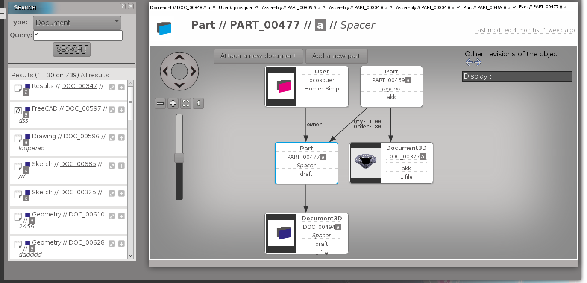

4. Navigate
This document describes how to use navigate feature

Indicates the current object.
When you click on an object, this object becomes the current object.
Choose displayed objects and links.
Other options can be proposed.
You can use the left panel to search an object and either add it as children or link it to the current object.
If you want to create and attach (or link) a new object to
the current one use the button(s) which will be displayed near here.
Placing your mouse over a document (purple box) you can have an outline of it.